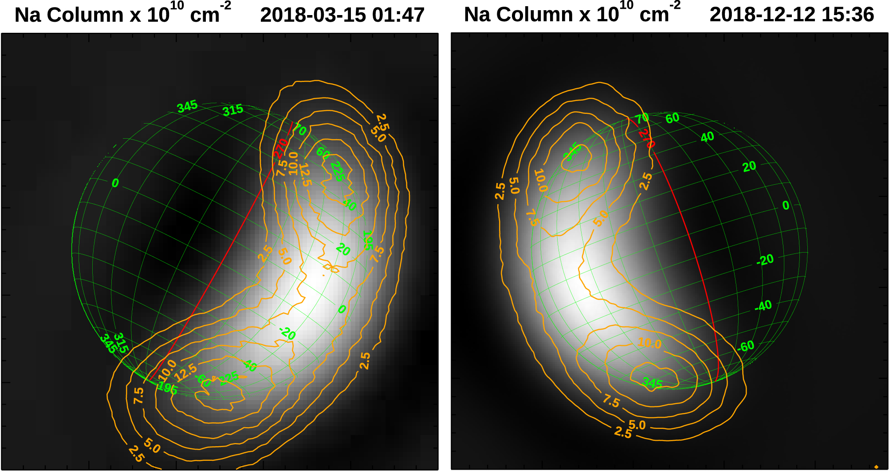

Rapid Imaging Planetary Spectrograph
RIPS is a specialized instrument for planetary spectroscopy constructed in collaboration with Jeff Baumgardner, Luke Moore and Patrick Lierle at the Center for Space Physics. The instrument was designed around the concept of lucky imaging--using a high cadence camera to mitigate atmospheric seeing by leveraging the fact that, thanks to sheer luck, Earth's atmospheric turblence above the telescope is occassionally still, just for a split second. RIPS takes this technique a step beyond in that it functions as a "lucky spectrograph." Each frame contains concurrent imaging and spectral channels on a single EMCCD detector. RIPS uses an echelle grating with high-dispersion ~1.25 km/s/pixel that is useful for disnetangling planetary spectroscpy using Doppler shifts. A motorized slit jaw allows long-slit spectroscopy at resolving powers up to R~126,000. A sacrifice needed to achieve this is the narrow spectral bandpass, RIPS uses internal sorting filters to isolate a single echelle order at a time containing an just one emission line or multiplet of interest. It further employs an optional pre-filter of ~45A bandpass to reject off-band light before it ever enters the instrument. We think this is a powerful new technique in instrumentation for planetary science. It's usage is limited to cases where the observer needs just a few nm of spectral information at a time to do their science, but there are actually quite a few of those applications in practice.
Obtaining a good signal to noise spectrum at a high resolving power requires both a very bright target object and a high throughput optical path. However, true lucky imaging has a limit due to the characteristic size scales of atmospheric turbulence. This is typically half a meter or less in the visible wavelengths, making "lucky" techniques mostly a small telescope trick favored by the best amateur astronomers. However, there are lots of caveats and high cadence imaging on large aperture telescopes can still mitigate things like wind shake and tracking errors. Tim Staley's PhD thesis makes a nice read for those interested in details of what lucky imaging can and can't achieve. As astronomical targets go, Mercury is right in the sweet spot for lucky imaging: at high airmass the wind and seeing are generally awful and it's really really bright. Here's how bad Mercury looks through a telescope (it's that quarter moon looking thingy on bottom):
Frames in the above video are 1/10th of a second expsoure times. The apparent motion is so bad that it effectively scans the planet for you and at one time or another all portions of the planet will be sampled by the spectrograph slit. Notice that some frames are better than others. This gives a tractable problem: trash the crummy data, keep the best frames, co-align them to correct for the planet moving around, and them add them together into a single good picture. This is lucky imaging. We can get a crisper image of the planet this way than we could using traditional astronomy, where this would all average out into a blurry mess over a long duration exposure. Now, Mercury is too close to the Sun for space telescopes like Hubble to point safely. The only other way to mitigate astronomical seeing from Earth's turbulent atmosphere is with adaptive optics. Here's Mercury through an adaptive optics telescope (gibbous phase in this case):
Adaptive optics stabilizes the image of the planet, so in this case we need to scan the slit across the planet ourselves, Earth's turbulent atmosphere and dodgy pointing won't do that for us. Even with good adaptive optics, the images aren't great. The quality falters from crisp to blurry as the adaptive optics system tries to compensate for rapid changes along the column of atmosphere near the horizon. Again, rapid timing information is useful: keep the good images and toss the bad. Once we've isolated the highest quality images, we can use the spectral information in those good frames build an image of the atmosphere. A 1-dimensional emission profile is extracted using spectral fitting to seperate out the atmospheric emission (the two bright lines) from the sunlight scattered of the disk (everything else). We can then use each 1-D profile to "paint in" an image of sodium as the slit is scanned across the disk. Lucking imaging results are on the left, adaptive optics results on the right.

RIPS showed that these high latitude spots vary night to night, presumably due to solar wind and interplanetary magnetic field conditions at Mercury. Mercury is a prime candidate for lucky spectroscopy, and as far as we know RIPS is the first application of this niche technique. Fainter objects must use RIPS as a conventional long slit spectrograph. Io's disk is too faint for the fast frame rate (~20fps) required to beat seeing. 1000x fainter emissions in the lunar exosphere require integrations of 10s of minutes. Comets and Europa are other good targets for long slit high resolution spectroscopy. The science goals at each of these targets varies. Often it's the really bright transitions of sodium and potassium that give us insight, but sometimes molecular features or oxygen aurorae can teach us about atmospheric chemistry and plasma interactions with atmosphereres. We've obtained some proof-of-concept RIPS data on these fainter objects that convince us it's worth investing time in larger observing campaigns, so we think there are diverse applications and a promising future for this new instrument.
Updated 2021-03-17